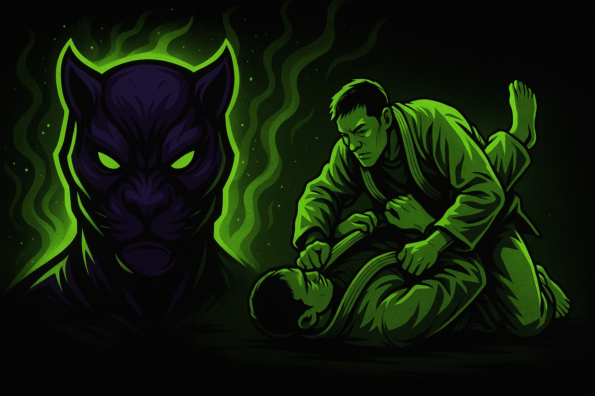

The working notebook alongside the longer investigations — on engineering, learning, and the mat. Five notes, published in full below.

METHOD — Notes are personal essays; claims about products and systems live in the evidence-first investigations.